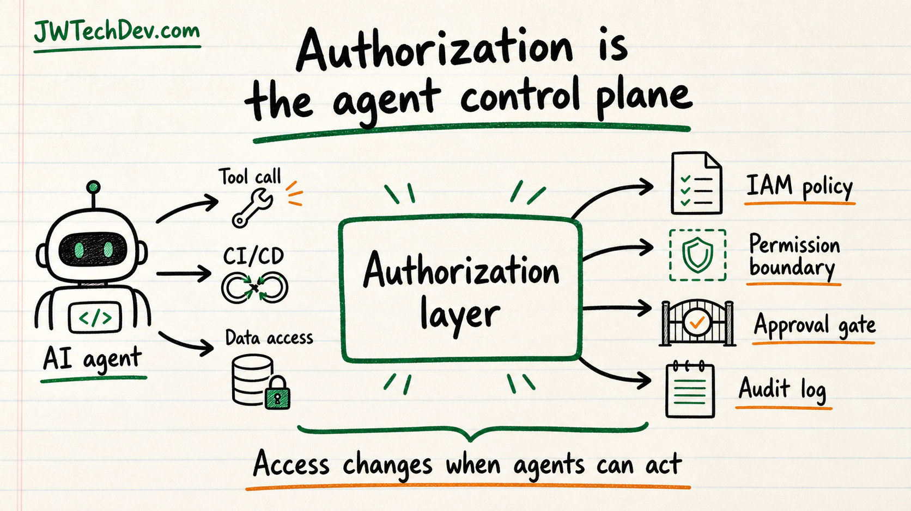

Authorization is becoming the control plane for AI agents
This is the part of AI that starts sounding less like prompts and more like real infrastructure.

Quick answer
Your follower is thinking at the right layer. As agents move from answering questions to taking actions through tools, CI/CD pipelines, APIs, and data systems, authorization becomes the control plane. The security question changes from what did the model say to what was the agent allowed to do.
Why this comment is smart
A lot of people are still arguing about prompts. That matters, but it is not the full system anymore.
Once an AI agent can call tools, trigger workflows, touch data, or move through a deployment process, the real risk lives in authorization. Which identity does the agent run as? Which role can it assume? Which tool can it call? Which resource can it touch? Which action needs approval?
That is exactly why this comment is worth taking seriously. It points to identity and access management as the place where agent systems either become useful or become dangerous.
Authentication is not authorization
Authentication asks who are you. Authorization asks what are you allowed to do.
That difference gets sharper with agents. A human might authenticate into an app, but the agent may execute a tool call under a service role, write to a database, open a ticket, start a build, or call an external service.
If the system only knows that a user is logged in, that is not enough. It also needs to evaluate the request context, policies, permission boundaries, resource rules, and explicit denies before action happens.
CI/CD and tool calls change the blast radius
When agents enter CI/CD, the blast radius expands. A bad suggestion is one thing. A bad suggestion that turns into a merged change, deployment, infrastructure update, or permission edit is a different risk category.
The same is true for tool frameworks. Tool access can create excessive agency: too much functionality, too many permissions, or too much autonomy for the task. That is not a model problem by itself. It is an architecture problem.
What learners should study next
Start with IAM policy evaluation. Learn implicit deny, explicit allow, explicit deny, identity-based policies, resource-based policies, permission boundaries, and organization-level controls.
Then learn how access changes when automation is involved: service roles, workload identities, temporary credentials, audit logs, and deployment approvals.
After that, connect it to AI agents. Every agent workflow should have an identity, a permission boundary, a tool allowlist, logs, and a human approval point for risky actions.
AWS mental model
AWS IAM documentation is useful because it shows authorization as request evaluation. A principal makes a request, AWS gathers context, evaluates applicable policies, and decides whether the request is allowed or denied.
That is a strong mental model for agents too. The agent should not just decide to act because the model sounds confident. The system around it should evaluate whether the action is allowed.
Builder checklist
Give every agent a named identity instead of vague shared access.
Start with read-only permissions and expand only when the workflow proves itself.
Keep write actions, deployments, spending, outbound messages, and permission changes behind approval gates.
Use policy validation tools before shipping permission changes.
Log the user, agent, tool, resource, action, result, and approval status.
Bottom line
The next serious AI skill is not just prompting. It is understanding how agents move through identity, authorization, tools, deployment systems, and logs.
Your follower is right: the way authorization works is going to matter more, not less. AI agents make IAM a front-row topic.
Sources checked
Want the starter kit?
Grab the free JWTechDev.com starter kit if you want a practical way to connect cloud basics, AI workflows, and approval gates.
Get resources